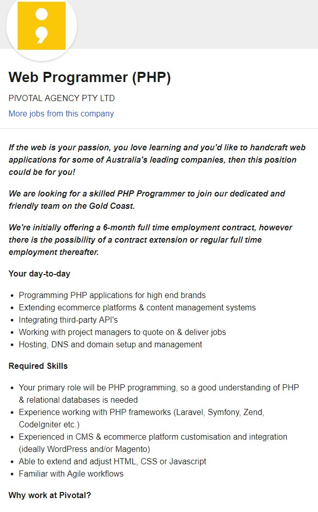

My name is Laawrence Redfern. I am 17 years old and love computers. My fondest memories with computers was play CS with my cousin. When i was young i was making batch games.
I always thought because i could write batch i was a coding god (Oh how wrong i was). At the age of 15 i attempted to write a javascript game and well lets say that didn't go to well.
I am currently studying at RMIT University with the hopes to complete a batcholers degree in IT. My student number is s3748752. I currently live in Townsville but i used to live in Darwin with my friends.
I used to work on fishing traulers as a way of making money but now i have decided to do something i love and pursue my dream career in Information and Tehcnology.
I currently have a daughter who means the absolute world to me and i want nothing but the best for her so i am determained to pass all courses i do so that i can better provide for her.
I generally play Rocket League alot and get way to worked up over it.
I love the coding side of IT (even though it is frustrating at times) due to the fact that i can watch in real time the changed take place and see the progress im making.
My intrest in IT was truly sparked by my cousin who i used to play CS with. I then got into pc gaming really heavy until i discorvered mods for minecraft (I was 11) and started learning about how to mod games.
Then my interest changed from moding games to writting batch games and programs and that is where i truly got my passion for writting code and seeing it take effect in real time.
I still have the windows shutdown code stuck in my head after deciding to prank my whole school and shutdown the school server's through remote access and then shutdown all computers in the school.
My teachers didnt think this was funny and i was internally suspended for 2 months.
I chose to study at RMIT due to the ease of studying online and flexibility required. RMIT was also the only uni doing a batcholers in IT through OUA and that is another reason i decided to start my studies with RMIT.
I have been quite happy while studying at RMIT and enjoy the structure and simplicity of the canvas site.
I expect to learn advanced coding and how to put together games, apps, websites and even devices. I hope that i can learn about hardware as much as software to better help in my future career goals.

the link to the page is a part of the image. Click the image to open the page
This position seems to be all about web programming and making websites and helping small-medium sized business owners start their online footprint and help them create a beautiful website that meets their ideas. This position caught my eye because I love programming and always challenging myself with a new way of creating a program. I believe this job had the requirement of someone who is quite skilled with HTML, Java and CSS as well as using the tools that they must use to make their websites for a simple and fast employment to not bog down the workflow of one individual while they would have to teach a new employee how to use their code editing programs. I currently have very little skills in IT and am constantly looking to learn more about IT.